2. Telas do sistema
O front-end é uma SPA em Vue 3 com Bootstrap 5. No computador o menu fica no topo; no celular vira uma barra fixa embaixo, como num aplicativo. São 17 telas.
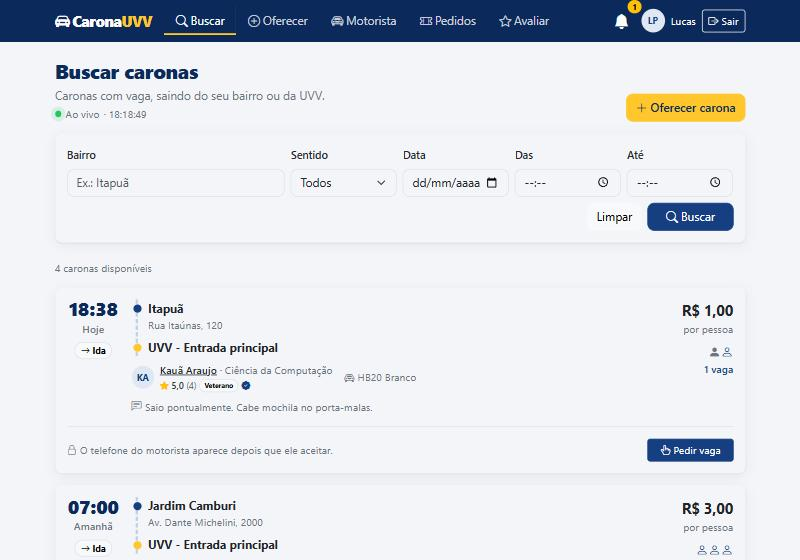

Documentação do projeto final · Entrega do 2º bimestre (auditoria técnica)
| Disciplina | Desenvolvimento de Sistemas para Web (CC5N) |
|---|---|
| Professor | Wanderson Muniz de Santana |
| Curso | Ciência da Computação · Noturno · UVV |
| Integrantes | Kauã Araujo de Souza (matrícula 202416377) Lucas Pizzol (matrícula 202415451) |
| Versão online | https://caronauvv.vercel.app |
| Repositório | github.com/lucaspizzol/caronauvv |
| Data | Novembro de 2026 |
O CaronaUVV é uma aplicação web que conecta alunos da UVV que fazem trajetos parecidos até o campus, para oferecer e pedir caronas de forma organizada e segura.
Problema. Muitos alunos vão sozinhos no próprio carro, enquanto colegas do mesmo bairro dependem de ônibus ou de aplicativos pagos. Quando existe carona, ela é combinada em grupos de WhatsApp: as ofertas se perdem, não há controle de vagas e, principalmente, não há como saber se a pessoa do outro lado é confiável.
Solução. Um mural de caronas filtrável por bairro, data e horário, em que o passageiro pede a vaga e o motorista confirma. Em cima disso, um sistema de confiança inspirado nos aplicativos de carona e transporte (BlaBlaCar, Uber, 99): só entra quem tem e-mail da UVV, todo mundo tem reputação pública, o embarque é confirmado com PIN, a família pode acompanhar a viagem e existe botão de emergência.
Público-alvo. Motoristas (alunos que vão de carro e têm lugares livres) e passageiros (alunos de bairros próximos), principalmente do noturno, que saem em horários fixos.
| Funcionalidade | O que o sistema faz |
|---|---|
| Cadastro e login | Cadastro com nome, matrícula, e-mail UVV, telefone, bairro e senha; confirmação do e-mail por código; login por e-mail ou matrícula; "esqueci minha senha" com código por e-mail. |
| Oferecer carona | Sentido (ida/volta), bairro, ponto de saída, destino no campus, data, horário, 1 a 6 vagas, rateio (com valor sugerido), carro e observações. Editar e cancelar. |
| Buscar caronas | Só caronas futuras e com vaga, com filtros por bairro, sentido, data e faixa de horário; cada cartão mostra a nota e o nível do motorista. |
| Pedir vaga | O passageiro pede a vaga (ponto de embarque e mensagem opcionais); o motorista aceita ou recusa, ou usa a reserva automática. |
| Minhas caronas / Meus pedidos | Motorista: pedidos recebidos com a reputação de cada passageiro. Passageiro: status, contato do motorista e PIN de embarque. |
| Ciclo da viagem | Iniciar viagem, confirmar o embarque de cada passageiro com o PIN, marcar falta e concluir. |
| Telas ao vivo | Busca, Minhas caronas, Meus pedidos e Notificações se atualizam sozinhas; motorista e passageiro podem ficar lado a lado em duas abas. |
| Recurso | Como funciona no CaronaUVV | Inspiração |
|---|---|---|
| Comunidade fechada | Cadastro só com e-mail @uvv.br (ou subdomínio); código de 6 números confirma o e-mail. Sem e-mail confirmado não dá para oferecer nem pedir carona. | BlaBlaCar (e-mail verificado) |
| Perfil verificado | O aluno pede o selo; a administração confere a matrícula e aprova. | BlaBlaCar (ID verificado) |
| Foto de perfil | O aluno envia a foto pelo perfil (câmera ou galeria no celular). Ela aparece na busca, nos pedidos, nas avaliações, no perfil público e no link da família, para motorista e passageiro se reconhecerem no ponto de encontro. A administração pode remover foto inadequada. | Uber / BlaBlaCar (foto no perfil) |
| Verificação em duas etapas | Com um aplicativo autenticador (Google Authenticator, Microsoft Authenticator, Authy), o login pede a senha e um código de 6 números que muda a cada 30 s. Vem com 8 códigos de reserva de uso único. | Uber, bancos, GitHub (2FA) |
| Documentos verificados | Motorista e passageiro enviam a foto da identidade; quem oferece carona envia também a CNH (com a validade). A administração confere e o perfil ganha os selos "Identidade verificada" e "CNH verificada", que aparecem nos cartões das caronas. Depois da conferência a imagem é apagada. O painel pode exigir CNH de quem oferece e identidade de quem pede vaga. | Uber e 99 (documentos do motorista), BlaBlaCar (ID verificado) |
| Cálculo do combustível | O carro informa o tipo (gasolina, etanol, flex, diesel, híbrido ou elétrico) e o consumo. Ao oferecer carona, a tela mostra a conta inteira: distância em km e metros, litros (ou kWh) gastos, custo da viagem com o preço do painel, a parte de cada pessoa no carro e o adicional do motorista, separado. O passageiro vê o mesmo detalhamento no cartão da carona. | BlaBlaCar (divisão de custos) |
| Reputação | Nota média, número de avaliações, nível de experiência (Calouro, Veterano, Embaixador), viagens como motorista e passageiro, faltas, taxa de cancelamento e selos (Super pontual, Muito bem avaliado, Nunca faltou...). | BlaBlaCar (perfil e níveis) |
| Avaliação "às cegas" | Motorista e passageiro se avaliam (1 a 5 + elogios + comentário) em até 14 dias; a nota só aparece quando os dois avaliam ou depois de 7 dias, para ninguém avaliar por vingança. | BlaBlaCar (two-way ratings) |
| Preferências | Conversa (prefere silêncio / depende / adora conversar), música, animais e cigarro, no perfil público. | BlaBlaCar ("Bla, BlaBla, BlaBlaBla") |
| PIN de embarque | O motorista inicia a viagem e digita o PIN de 4 números que o passageiro fala: garante que cada um entrou no carro certo. | Uber (verificação por PIN) |
| Faltas | Passageiro confirmado que não aparece leva uma falta, visível para o próximo motorista antes de aceitar. | BlaBlaCar (no-show) |
| Link da família | Página pública (sem login) com motorista, carro, placa, status e última posição GPS no mapa; deixa de funcionar quando a viagem termina. | Uber (compartilhar status da viagem) |
| Botão de emergência | Gera um alerta para a administração, oferece ligar 190 e avisar os contatos de confiança pelo WhatsApp. | Uber / 99 |
| Rateio solidário | Teto por passageiro (padrão R$ 5,00) e valor sugerido = combustível ÷ ocupantes; pagamento por Pix copia e cola com QR Code. | BlaBlaCar (preço sugerido) |
| Notificações | Sino com contador: pedido novo, vaga confirmada/recusada, viagem iniciada, embarque, pagamento, avaliação. | Todos |
| Denúncias e moderação | Só denuncia quem dividiu uma carona; o admin analisa, encerra com resolução e pode suspender a conta. | Todos |
| Painel da administração | Indicadores (ocupação, CO₂ evitado, faltas, nota média), demanda sem oferta por bairro, verificação de perfis, denúncias, alertas, regras e o banco de dados ao vivo. | — |
| Recurso | Como funciona |
|---|---|
| 30 min para responder | O pedido de vaga expira se o motorista não responder em 30 min (ou 2 h antes da saída, o que vier antes). Motorista e passageiro veem a contagem regressiva; o passageiro é avisado quando expira. |
| Bairros enquanto digita | 512 bairros de Vila Velha, Vitória, Cariacica e Serra, sem precisar de acento, num campo acessível (setas, Enter, Esc). CEP preenche rua e bairro; a rua também é sugerida pelo nome. O campo Bairro recusa "Rua..."/"Av...". |
| Distância real até a UVV | Pela rota de carro (OSRM) e, se o serviço cair, pela linha reta entre as coordenadas × 1,35. |
| Pedir carona (fila com prioridade) | Sem carona, o aluno entra na fila do bairro/dia/horário (até 3 pedidos). Carona compatível avisa a fila e, por 15 min, só quem estava na fila pede vaga; com reserva automática a vaga fica guardada para os primeiros. O motorista vê "N alunos esperando" ao oferecer. Falta recente tira a prioridade. |
| Que horas você vai sair? | Recomenda caronas 30 min antes/depois do horário e os ônibus que costumam servir o trajeto. Como o Transcol não publica horários em dados abertos, o ônibus aparece como estimativa, sem horário, com link para os horários oficiais. |
| Entrada e saída com GPS | Hora e local de entrada (PIN) e de saída ("Desembarquei"); resumo da viagem com tempo a bordo, distância pela trilha, velocidade, atraso na saída e mapa (Leaflet + OpenStreetMap). Médias no painel. |
| Trânsito no valor | Horário de pico (+25%) e trechos críticos da Grande Vitória (+10% cada: Terceira Ponte, Segunda Ponte, Rodovia do Sol, BR-101), até +50%, mostrados na conta. |
| Meus pedidos, FAQ e visual | Abas Próximas/Aguardando/Histórico, PIN em destaque, página pública de perguntas frequentes, tela de entrada como vitrine, foco do teclado visível e contraste AA. |
| Controle de avaliações (painel admin) | A aba Avaliações mostra todas as notas na hora (atualiza a cada 5 s), inclusive as que o aluno ainda não vê, com média geral, distribuição 1–5, alunos em risco e excluídos. Nota abaixo de 4 gera alerta para a administração (aviso na tela, no sino e na aba Alertas). Média abaixo de 3 exclui o aluno do aplicativo automaticamente (conta suspensa, caronas e pedidos cancelados), com a opção de reativar. Os limites ficam na aba Regras. |
| Viagens ao vivo (painel admin) | Todas as viagens acontecendo agora, saindo nas próximas 3 h e concluídas há pouco: motorista, carro e placa, passageiros (aguardando, a bordo, desembarcou, faltou), tempo de viagem, velocidade, último sinal do GPS e o mapa com os carros e o trajeto. |
O front-end é uma SPA em Vue 3 com Bootstrap 5. No computador o menu fica no topo; no celular vira uma barra fixa embaixo, como num aplicativo. São 17 telas.



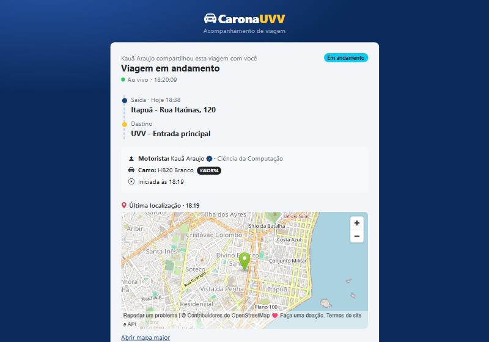

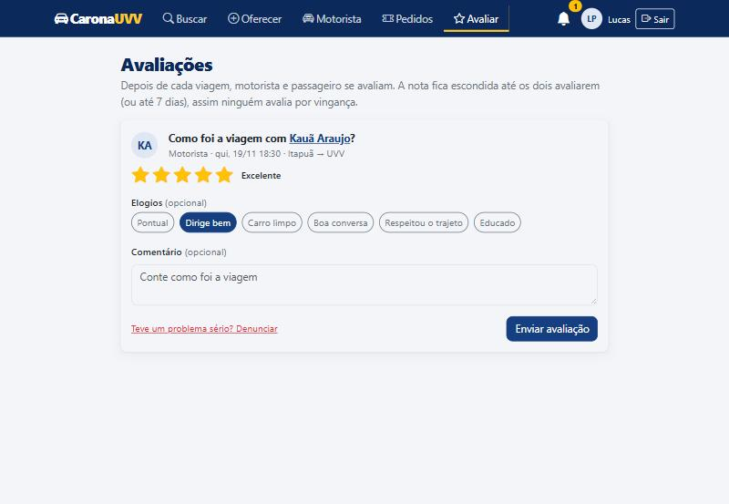

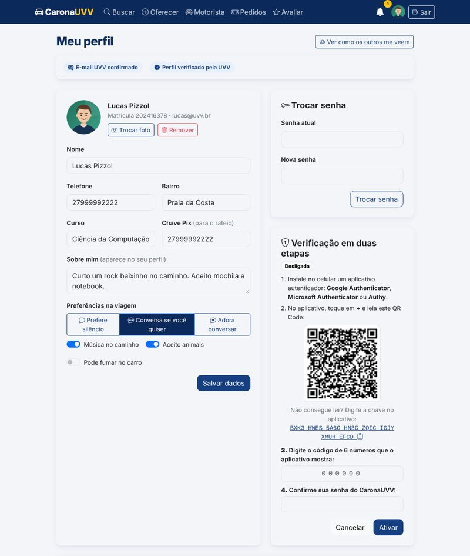
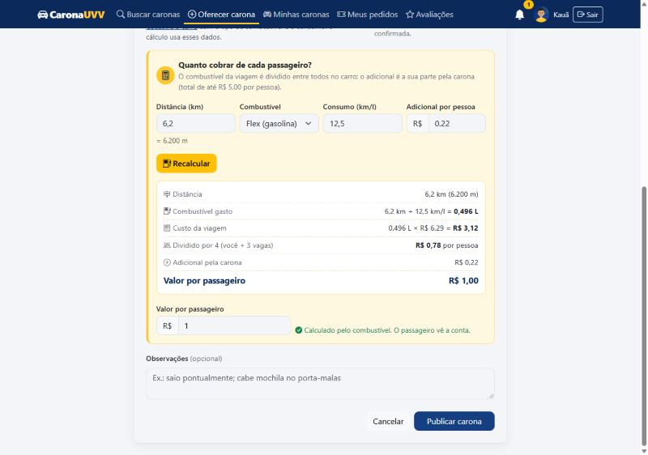
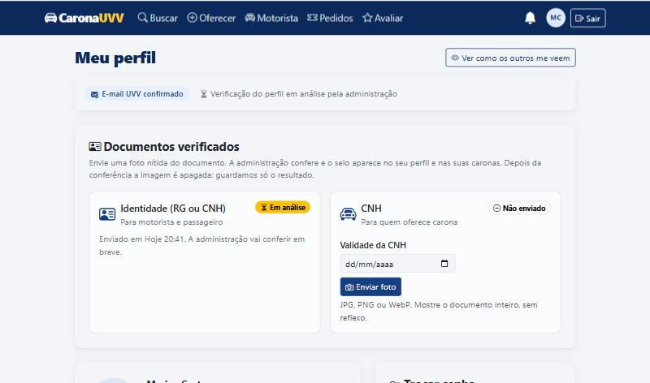
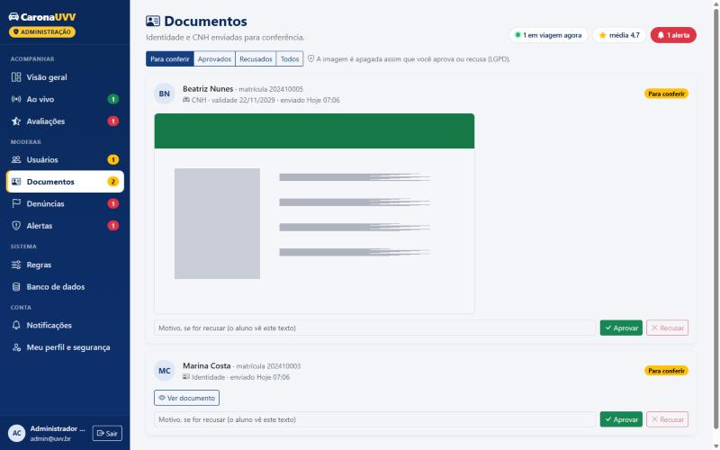
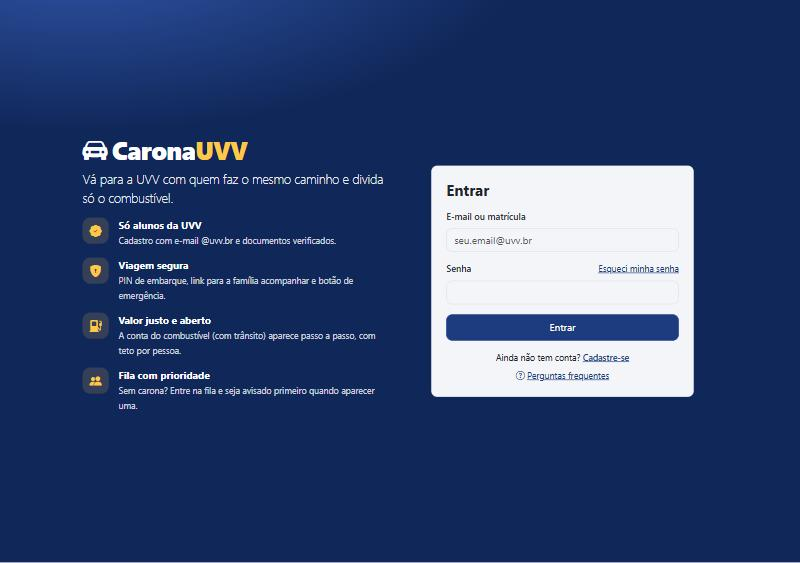
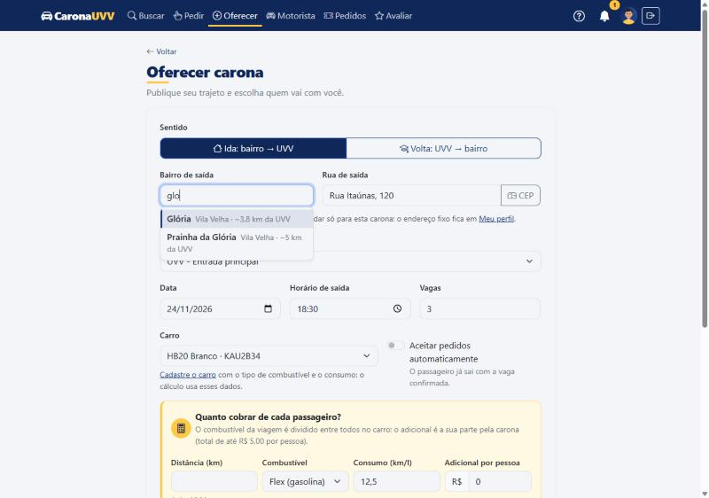
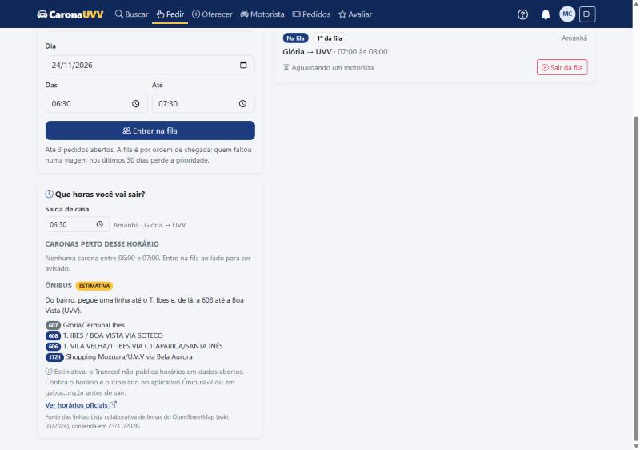
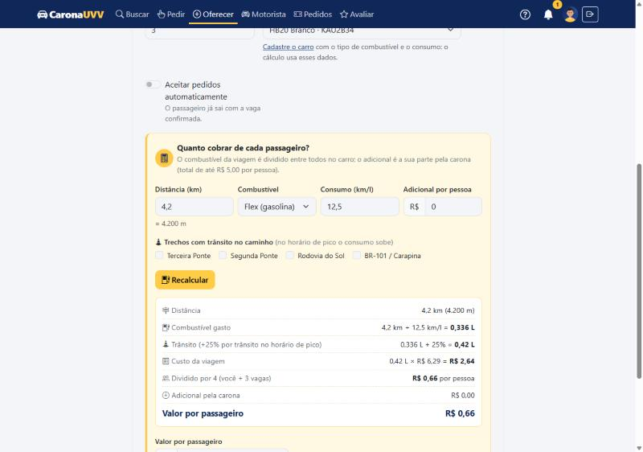
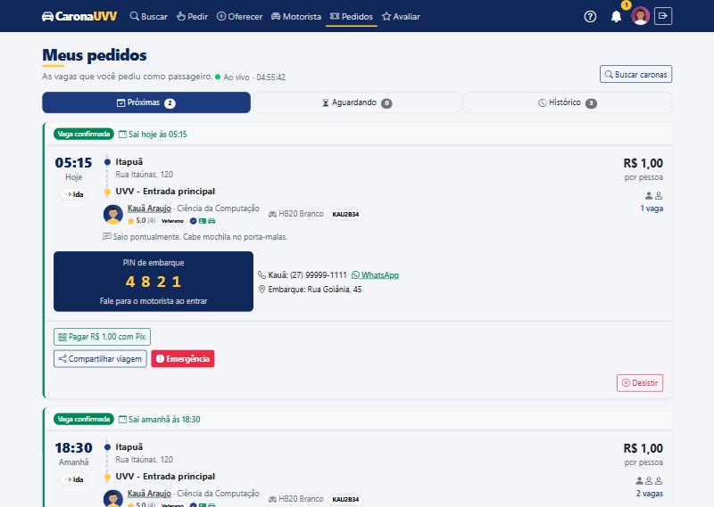
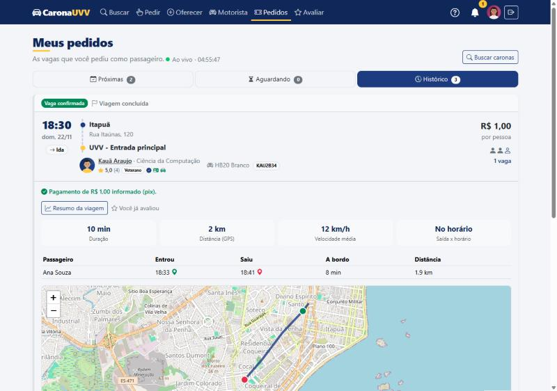
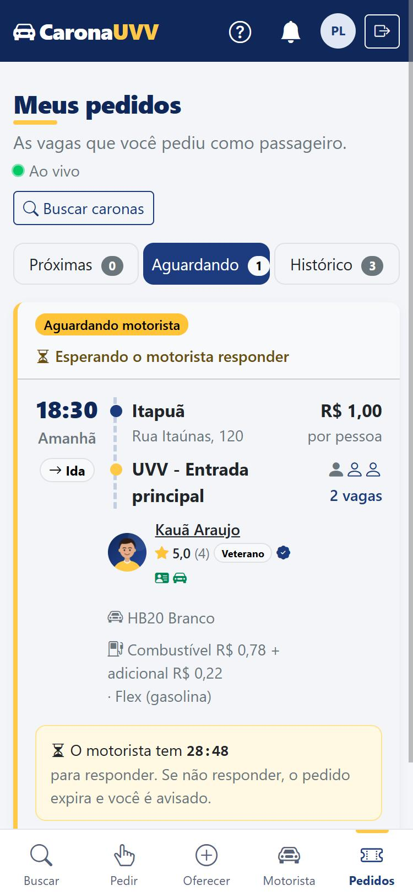
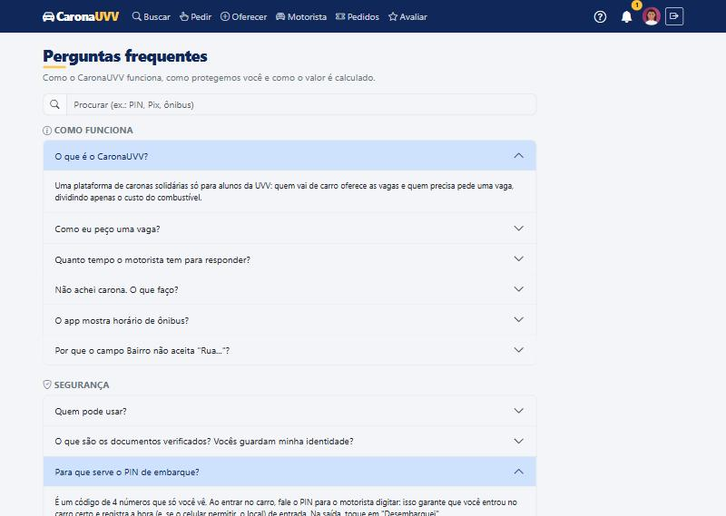
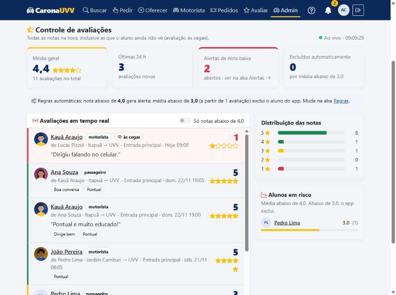
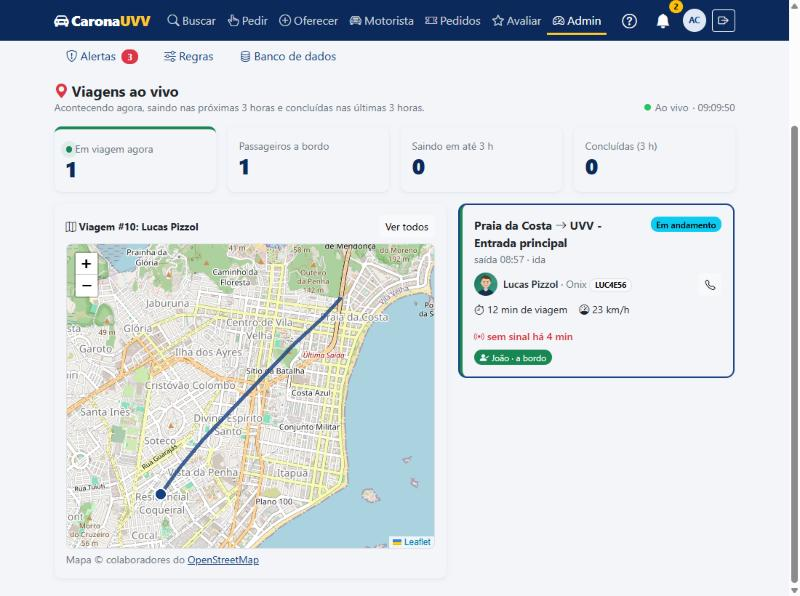
Todas as telas foram conferidas em 360, 390, 768, 1024 e 1280 px de largura, sem rolagem horizontal (medido no navegador). Até 991 px (celular e tablet) o menu é a barra de baixo; a partir daí, o menu do topo. O grid do Bootstrap reorganiza filtros e cartões; botões e campos têm tamanho de toque.
Um único componente, AvatarUsuario.vue, mostra a foto ou, se o aluno não enviou nenhuma (ou se
ela não carregar), as iniciais do nome. É usado na barra do topo, na busca, nos pedidos, nas avaliações, no
perfil público, no painel da administração e no link da família.
Campos com label, mensagens de erro ligadas ao campo (invalid-feedback),
estrelas da avaliação como radiogroup com aria-checked, botões de elogio com
aria-pressed e animações desligadas para quem prefere movimento reduzido.
O banco tem 19 tabelas, definidas como classes Python com Flask-SQLAlchemy 2.0
(Mapped[...] e mapped_column) e versionadas com Flask-Migrate (Alembic, 8 migrações).
Qual banco e por quê. No desenvolvimento e na apresentação usamos SQLite: é um arquivo
(backend/instance/caronauvv.db), não precisa instalar servidor e o projeto roda em qualquer máquina.
Em produção o banco indicado é o PostgreSQL (concorrência real, tipos fortes, transações em DDL); basta
definir DATABASE_URL, sem mudar código. Não ficamos só na promessa: os 379 testes do back-end
e as migrações (upgrade, downgrade e upgrade de novo, com dados) foram executados nos dois bancos.
Gerado automaticamente dos modelos do SQLAlchemy (o modelo inteiro aparece ao vivo no painel do admin, aba Banco de dados). PK = chave primária, FK = chave estrangeira.
A foto fica numa tabela separada de usuarios para que listar alunos não carregue as
imagens. Em usuarios ficam só o endereço da foto (foto_url) e o estado do autenticador
(segredo, se está ativo, último código usado e contador de erros).
O dicionário de dados completo (cada coluna, tipo e restrição) está em docs/banco_de_dados.md,
e o esquema SQL do PostgreSQL em docs/schema_postgresql.sql (ambos gerados por invoke docsdb).
| Tabela | Para que serve | Colunas | Chaves estrangeiras para | CHECKs |
|---|---|---|---|---|
configuracoes | Regras ajustáveis: teto do rateio, prazos, segurança | 4 | — | 0 |
usuarios | Alunos (motorista e passageiro), preferências, verificação de e-mail e selo | 42 | — | 1 |
buscas | Buscas por bairro (demanda sem oferta no painel) | 9 | usuarios | 1 |
codigos_reserva | Códigos de uso único da verificação em duas etapas (só o HMAC) | 5 | usuarios | 0 |
contatos_confianca | Quem recebe o link da viagem e o aviso de emergência | 5 | usuarios | 0 |
documentos | Identidade e CNH enviadas para verificação (a imagem é apagada depois da análise) | 12 | usuarios | 2 |
fotos_perfil | Arquivo da foto de perfil (no banco: a Vercel não guarda arquivos em disco) | 7 | usuarios | 0 |
veiculos | Carros do motorista (placa única) | 8 | usuarios | 2 |
caronas | Oferta do motorista: trajeto, horário, vagas, rateio e status | 32 | usuarios, veiculos | 5 |
alertas | Alertas de segurança, inclusive o botão de emergência | 13 | caronas, usuarios | 3 |
denuncias | Denúncias entre usuários e a análise do admin | 11 | caronas, usuarios | 2 |
links_compartilhados | Links públicos de acompanhamento da viagem | 9 | caronas, contatos_confianca, usuarios | 0 |
notificacoes | Avisos do sino (pedido novo, vaga confirmada...) | 8 | caronas, usuarios | 0 |
pedidos_carona | Fila do Pedir carona: bairro, sentido, dia e faixa de horário (prioridade nas caronas novas) | 12 | caronas, usuarios | 3 |
posicoes_gps | Trilha GPS da viagem em andamento (link da família) | 5 | caronas | 0 |
solicitacoes | Pedido de vaga: status, PIN de embarque, embarque e falta | 23 | caronas, usuarios | 2 |
avaliacoes | Nota de 1 a 5 entre motorista e passageiro | 7 | solicitacoes, usuarios | 2 |
pagamentos | Rateio por Pix/dinheiro, com o código Pix copia e cola | 9 | solicitacoes | 3 |
avaliacao_tags | Elogios de cada avaliação (Pontual, Dirige bem...) | 3 | avaliacoes | 0 |
ON DELETE CASCADE / SET NULL conforme o caso (apagar uma carona apaga pedidos e GPS; apagar um carro deixa a carona antiga sem carro). No SQLite elas são ligadas com PRAGMA foreign_keys=ON.pk_ fk_ ck_ uq_ ix_), que o Alembic usa para alterar constraints.Duas aplicações que conversam por JSON, no mesmo modelo do projeto TaskFlow visto em aula: uma API REST em Flask e uma SPA em Vue 3. No back-end, cada domínio é um pacote com quatro camadas:
Navegador (Vue 3 + Bootstrap)
│ axios ── Authorization: Bearer <token>
▼
/api/* (o Vite repassa para localhost:5000 no desenvolvimento)
│
Flask ── create_app() (Application Factory)
├─ Blueprints por domínio:
│ auth · caronas · avaliacoes · notificacoes · seguranca · admin
│
│ routes.py ── recebe a requisição, chama o schema e o service, devolve JSON
│ │
│ schemas.py ── valida o formulário (Pydantic): tipos, tamanhos, regras de campo
│ │
│ services.py ── regras de negócio (vagas, PIN, reputação, permissões...)
│ │
│ models.py ── tabelas (SQLAlchemy 2.0)
│
├─ validacao.py erros do Pydantic → {"error": ..., "campos": {...}} em português
├─ errors.py ApiError / 404 / 405 / 500 → JSON (nunca devolve stack trace)
├─ logs.py uma linha de log por requisição (+ arquivo com rotação)
├─ email.py SMTP ou log em desenvolvimento
└─ ext/db Flask-SQLAlchemy + Flask-Migrate → SQLite (dev) / PostgreSQL (prod)
| Pasta / arquivo | Responsabilidade |
|---|---|
caronauvv/__init__.py | Application Factory: configuração, log, banco, CORS, registro dos 6 módulos e dos erros |
config.py + .env | Tudo por variável de ambiente: chave secreta, banco, CORS, log, e-mail, domínios aceitos, proteção do login |
auth/ | Cadastro, verificação de e-mail, login por token, recuperação de senha, perfil, perfil público, veículos e contatos de confiança; foto.py (foto de perfil), totp.py e dois_fatores.py (verificação em duas etapas); decorators @login_required e @admin_required |
caronas/ | Caronas e pedidos: busca, criar, editar, cancelar, iniciar, embarque com PIN, falta, GPS, concluir, valor sugerido |
avaliacoes/ | Avaliações às cegas, reputação, Pix copia e cola e pagamento |
notificacoes/ | Criação (dentro da mesma transação da ação), listagem, contagem e leitura |
seguranca/ | Link da família, botão de emergência e denúncias |
admin/ | Indicadores, moderação, configurações e estrutura do banco |
migrations/, tests/ | Migrações do Alembic e testes com pytest (SQLite em memória ou PostgreSQL) |
frontend/src/ | views, components, router (rotas protegidas e de admin), services/api.ts, stores (sessão por aba), composables (ao vivo), utils (+ testes Vitest), types/api.ts (formato das respostas da API); tudo em TypeScript |
regras.pin) e chama POST /api/solicitacoes/7/embarque.@login_required lê o token e coloca o usuário em g.usuario.PinSchema (4 números); confirmar_embarque() confere o motorista, a viagem em andamento e o PIN (secrets.compare_digest), grava o embarque e a notificação na mesma transação.ApiError → {"error": "PIN incorreto..."}, mostrado embaixo do campo.A aplicação é criada por create_app(), que recebe a classe de configuração (a de testes troca o banco
por SQLite em memória). Cada módulo registra os próprios Blueprints.
def create_app(config_class=Config):
app = Flask(__name__)
app.config.from_object(config_class)
_aplicar_fuso(app.config.get("APP_TZ", ""))
# ----------------------------------------------------------
# Logging (nivel definido por LOG_LEVEL no .env)
# ----------------------------------------------------------
init_logs(app)
# ----------------------------------------------------------
# Banco de dados
# ----------------------------------------------------------
init_db(app)
register_models()
# render_as_batch: o SQLite nao tem ALTER TABLE completo; o Alembic recria a tabela
migrate.init_app(app, db, render_as_batch=True)
# ----------------------------------------------------------
# CORS para o frontend Vue 3 (Vite em localhost:5173)
# ----------------------------------------------------------
cors.init_app(app, resources={r"/api/*": {"origins": app.config["CORS_ORIGINS"]}})
# ----------------------------------------------------------
# Blueprints (um por modulo)
# ----------------------------------------------------------
from .admin import init_app as init_admin
from .auth import init_app as init_auth
from .avaliacoes import init_app as init_avaliacoes
from .caronas import init_app as init_caronas
from .lugares import init_app as init_lugares
from .notificacoes import init_app as init_notificacoes
from .seguranca import init_app as init_seguranca
init_auth(app) # /api/auth, /api/usuarios, /api/veiculos, /api/contatos
init_caronas(app) # /api/caronas, /api/solicitacoes
init_lugares(app) # /api/lugares (bairros, CEP, ruas, distancia ate a UVV)
init_avaliacoes(app) # avaliacoes, reputacao e pagamento Pix
init_notificacoes(app) # /api/notificacoes
init_seguranca(app) # link da familia, botao de emergencia, denuncias
init_admin(app) # /api/admin (painel da administracao)
# ----------------------------------------------------------
# Erros -> JSON ({"error": "..."}), inclusive 404/405/500
# ----------------------------------------------------------
init_errors(app)
# ----------------------------------------------------------
# Cabecalhos de seguranca em toda resposta da API
# ----------------------------------------------------------
@app.after_request
def _cabecalhos_de_seguranca(resposta):
resposta.headers.setdefault("X-Content-Type-Options", "nosniff")
resposta.headers.setdefault("X-Frame-Options", "DENY")
resposta.headers.setdefault("Referrer-Policy", "strict-origin-when-cross-origin")
if request.path.startswith("/api") and resposta.mimetype == "application/json":
# JSON com dados pessoais: nao guarda em cache e nao roda como pagina
resposta.headers.setdefault("Cache-Control", "no-store")
resposta.headers.setdefault("Content-Security-Policy", "default-src 'none'; frame-ancestors 'none'")
return resposta
if app.config["SECRET_KEY"] == DEV_SECRET_KEY and not app.config.get("DEBUG") and not app.config.get("TESTING"):
app.logger.critical("SECRET_KEY de desenvolvimento em producao! Defina SECRET_KEY no ambiente.")
@app.get("/api/health")
def health():
return {"status": "ok", "message": "CaronaUVV API is running", "banco": db.engine.dialect.name}
app.logger.info("CaronaUVV API iniciada (banco: %s)", app.config["SQLALCHEMY_DATABASE_URI"].split("@")[-1])
return appCada formulário tem um schema. Ele limpa os espaços, converte tipos e aplica as regras de cada campo. O cadastro só aceita e-mail institucional:
class CadastroSchema(Schema):
nome: str = Field(min_length=1, max_length=150)
matricula: str = Field(min_length=1, max_length=20)
email: str = Field(min_length=1, max_length=255)
telefone: Digitos = Field(min_length=1)
bairro: Bairro = Field(min_length=1, max_length=100)
senha: str = Field(min_length=1, max_length=128)
curso: TextoOpcional = Field(default=None, max_length=120)
@field_validator("matricula")
@classmethod
def _matricula(cls, v: str) -> str:
if not re.fullmatch(r"\d{5,12}", v):
raise ValueError("A matrícula tem de 5 a 12 números.")
return v
@field_validator("email")
@classmethod
def _email_institucional(cls, v: str) -> str:
v = v.lower()
if not EMAIL_REGEX.match(v):
raise ValueError("E-mail inválido.")
dominio = v.rsplit("@", 1)[1]
permitidos = dominios_permitidos()
# aceita o dominio exato (uvv.br) e subdominios (aluno.uvv.br)
if not any(dominio == d or dominio.endswith("." + d) for d in permitidos):
raise ValueError(f"Use seu e-mail institucional (@{permitidos[0]}). Só alunos da UVV podem entrar.")
return v
@field_validator("telefone")
@classmethod
def _tel(cls, v: str) -> str:
return _telefone(v)
@field_validator("senha")
@classmethod
def _senha(cls, v: str) -> str:
if len(v) < SENHA_MINIMA:
raise ValueError(f"A senha precisa ter pelo menos {SENHA_MINIMA} caracteres.")
return vA rota chama validar(Schema, json). Se algo estiver errado, a resposta traz a mensagem geral e o erro de
cada campo, em português — o Vue usa esse dicionário para pintar o campo certo:
def validar(schema: type[S], dados) -> S:
"""Valida o JSON recebido com o schema; em caso de erro levanta ApiError(400)."""
if not isinstance(dados, dict):
raise ApiError("Envie os dados em JSON.")
try:
return schema.model_validate(dados)
except ValidationError as exc:
campos: dict[str, str] = {}
faltando: list[str] = []
for erro in exc.errors():
campo = ".".join(str(p) for p in erro["loc"]) or "geral"
if campo in campos:
continue
campos[campo] = _mensagem(erro)
if erro["type"] in ("missing", "string_too_short"):
faltando.append(campo)
if faltando:
mensagem = f"Campos obrigatórios: {', '.join(faltando)}."
else:
campo, texto = next(iter(campos.items()))
mensagem = texto if campo == "geral" else f"{campo}: {texto}"
raise ApiError(mensagem, 400, campos=campos) from None@bp.post("/cadastro")
def cadastro():
usuario, codigo = cadastrar_usuario(validar(CadastroSchema, _json()))
corpo = {"usuario": usuario.to_dict(privado=True), "token": gerar_token(usuario)}
return _com_codigo_dev(corpo, codigo), 201Modelos tipados, com as regras de integridade declaradas no próprio modelo:
class Solicitacao(db.Model):
__tablename__ = "solicitacoes"
__table_args__ = (
# Regra: o passageiro nao pode pedir a mesma carona duas vezes
UniqueConstraint("carona_id", "passageiro_id", name="uq_solicitacao_carona_passageiro"),
CheckConstraint(check_valores("status", STATUS_SOLICITACAO), name="status"),
CheckConstraint(check_valores("metodo_embarque", METODOS_EMBARQUE), name="metodo_embarque"),
)
id: Mapped[int] = mapped_column(db.Integer, primary_key=True)
carona_id: Mapped[int] = mapped_column(db.Integer, db.ForeignKey("caronas.id", ondelete="CASCADE"), nullable=False, index=True)
passageiro_id: Mapped[int] = mapped_column(db.Integer, db.ForeignKey("usuarios.id"), nullable=False, index=True)
# ------------------------------------------------------
# PONTO DE EMBARQUE
# ------------------------------------------------------
endereco_embarque: Mapped[Optional[str]] = mapped_column(db.String(255))
embarque_lat: Mapped[Optional[float]] = mapped_column(db.Float) # [EXTRA]
embarque_lng: Mapped[Optional[float]] = mapped_column(db.Float)
desvio_min: Mapped[Optional[int]] = mapped_column(db.Integer) # [EXTRA] "desvio de +1 min"
distancia_rota_m: Mapped[Optional[int]] = mapped_column(db.Integer) # [EXTRA] "30 m da rota"
mensagem: Mapped[Optional[str]] = mapped_column(db.String(300))
# ------------------------------------------------------
# STATUS
# ------------------------------------------------------
status: Mapped[str] = mapped_column(db.String(20), nullable=False, default="pendente", index=True)
respondida_em: Mapped[Optional[datetime]] = mapped_column(db.DateTime)
expira_em: Mapped[Optional[datetime]] = mapped_column(db.DateTime) # [EXTRA] 30 min para responder (ou 2 h antes da saida)
# ------------------------------------------------------
# EMBARQUE COM PIN [EXTRA]
# ------------------------------------------------------
pin_embarque: Mapped[Optional[str]] = mapped_column(db.String(4))
embarcou_em: Mapped[Optional[datetime]] = mapped_column(db.DateTime)
metodo_embarque: Mapped[Optional[str]] = mapped_column(db.String(20)) # "pin+gps", "gps", "manual"
faltou: Mapped[bool] = mapped_column(db.Boolean, nullable=False, default=False) # [EXTRA] "faltas" na tela 6A privacidade fica no modelo: o telefone e a placa só entram no JSON para quem participa da viagem.
def pode_ver_contato(self, usuario: Optional["Usuario"]) -> bool:
if usuario is None:
return False
if usuario.id == self.motorista_id:
return True
return any(s.passageiro_id == usuario.id and s.status == "aceita" for s in self.solicitacoes)Ciclo da viagem (inspirado no Uber). Iniciar exige a janela de 30 minutos e ao menos um passageiro; os pedidos pendentes expiram e os passageiros são avisados:
def iniciar_carona(carona: Carona, usuario: Usuario) -> Carona:
_exigir_motorista(carona, usuario)
if carona.status not in STATUS_EDITAVEIS:
raise ApiError(f"Não é possível iniciar uma carona {carona.status}.")
if datetime.now() < carona.data_hora_saida - JANELA_INICIO:
raise ApiError("A viagem só pode ser iniciada a partir de 30 minutos antes da saída.")
aceitos = [s for s in carona.solicitacoes if s.status == "aceita"]
if not aceitos:
raise ApiError("Nenhum passageiro confirmado. Cancele a carona se não for mais sair.")
carona.status = "em_andamento"
carona.iniciada_em = datetime.now()
for solicitacao in carona.solicitacoes:
if solicitacao.status == "pendente":
solicitacao.status = "expirada"
for solicitacao in aceitos:
notificar(solicitacao.passageiro, "viagem_iniciada", f"{_primeiro_nome(usuario)} iniciou a viagem",
f"Esteja no ponto de embarque. Mostre seu PIN {solicitacao.pin_embarque} ao motorista.", carona)
db.session.commit()
return caronadef confirmar_embarque(solicitacao: Solicitacao, usuario: Usuario, pin: str,
lat: float | None = None, lng: float | None = None) -> Solicitacao:
"""O passageiro fala o PIN e o motorista digita: garante que entrou no carro certo."""
carona = _solicitacao_da_viagem(solicitacao, usuario)
if not secrets.compare_digest(pin, solicitacao.pin_embarque or ""):
raise ApiError("PIN incorreto. Confira com o passageiro.")
solicitacao.embarcou_em = datetime.now()
tem_gps = lat is not None and lng is not None
solicitacao.metodo_embarque = "pin+gps" if tem_gps else "pin"
if tem_gps:
solicitacao.embarque_gps_lat, solicitacao.embarque_gps_lng = lat, lng
solicitacao.faltou = False
notificar(solicitacao.passageiro, "embarque_confirmado", "Embarque confirmado",
f"Boa viagem! Você está no carro de {_primeiro_nome(carona.motorista)}.", carona)
db.session.commit()
return solicitacaoAvaliação às cegas (inspirada no BlaBlaCar). A nota só é revelada quando o outro lado também avaliou ou depois do prazo configurado:
def avaliacao_revelada(avaliacao: Avaliacao, dias: int | None = None) -> bool:
dias = _dias_revelar() if dias is None else dias
if avaliacao.created_at <= datetime.now() - timedelta(days=dias):
return True
return any(a.avaliador_id == avaliacao.avaliado_id for a in avaliacao.solicitacao.avaliacoes)Rateio solidário. O valor sugerido divide o combustível entre todos e nunca passa do teto:
def valor_sugerido(distancia_km: float, vagas: int) -> Decimal:
"""Custo do combustivel dividido entre motorista e passageiros, limitado ao teto."""
custo_km = Configuracao.obter_decimal("custo_km_combustivel", "0.55")
valor = custo_km * Decimal(str(distancia_km)) / Decimal(vagas + 1)
# arredonda para cima, de 50 em 50 centavos (R$ 0,85 -> R$ 1,00)
valor = (valor * 2).to_integral_value(rounding=ROUND_CEILING) / 2
return min(max(valor, Decimal("0")), teto_rateio()).quantize(Decimal("0.01"))SECRET_KEY (itsdangerous), com validade; conta suspensa invalida o token na hora, e trocar a senha derruba os tokens antigos (o token leva a "versão da sessão" do usuário).secrets.compare_digest (tempo constante).@admin_required no painel.def verificar_email(usuario: Usuario, codigo: str) -> Usuario:
if usuario.email_verificado:
return usuario
if not usuario.codigo_verificacao_hash or not usuario.codigo_expira_em:
raise ApiError("Peça um novo código.")
if usuario.codigo_expira_em < datetime.now():
raise ApiError("O código venceu. Peça um novo.")
if usuario.codigo_tentativas >= MAX_TENTATIVAS_CODIGO:
raise ApiError("Muitas tentativas erradas. Peça um novo código.", 429)
if not hmac.compare_digest(usuario.codigo_verificacao_hash, _hash_codigo(usuario, codigo)):
usuario.codigo_tentativas += 1
db.session.commit()
raise ApiError("Código incorreto.")
usuario.email_verificado = True
usuario.codigo_verificacao_hash = None
usuario.codigo_expira_em = None
db.session.commit()
return usuariodef admin_required(view):
"""Como login_required, mas so deixa passar administradores (painel /admin)."""
@wraps(view)
@login_required
def wrapper(*args, **kwargs):
if not g.usuario.is_admin:
raise ApiError("Área restrita à administração.", 403)
return view(*args, **kwargs)
return wrapperO código de 6 números segue o padrão TOTP (RFC 6238), o mesmo do Google Authenticator. Servidor e aplicativo guardam o mesmo segredo e calculam um HMAC do número do intervalo de 30 segundos. Implementamos com a biblioteca padrão do Python (sem dependência nova) e conferimos com os vetores oficiais da RFC nos testes:
def codigo_do_passo(segredo: str, passo: int) -> str:
"""HOTP (RFC 4226) do intervalo: HMAC-SHA1 + truncamento dinamico."""
resumo = hmac.new(_chave(segredo), struct.pack(">Q", passo), hashlib.sha1).digest()
inicio = resumo[-1] & 0x0F # os 4 ultimos bits dizem de onde tirar os 4 bytes
numero = struct.unpack(">I", resumo[inicio:inicio + 4])[0] & 0x7FFFFFFF
return str(numero % 10**DIGITOS).zfill(DIGITOS)
def verificar(segredo: str, codigo: str, instante: float | None = None, depois_do_passo: int | None = None) -> int | None:
"""
Confere o codigo digitado. Devolve o numero do intervalo que bateu, ou None.
depois_do_passo: ultimo intervalo ja usado por este usuario. Um codigo so vale
uma vez, entao quem viu o codigo por cima do ombro nao consegue reaproveitar.
"""
codigo = "".join(c for c in str(codigo or "") if c.isdigit())
if len(codigo) != DIGITOS:
return None
agora = passo_atual(instante)
for passo in range(agora - JANELA, agora + JANELA + 1):
if depois_do_passo is not None and passo <= depois_do_passo:
continue
# compare_digest: comparacao em tempo constante (nao vaza quantos digitos estao certos)
if hmac.compare_digest(codigo_do_passo(segredo, passo), codigo):
return passo
return NoneO login vira duas chamadas. A primeira confere a senha e, se a conta usa autenticador, devolve um desafio assinado (vale 5 minutos) no lugar do token. A segunda recebe o desafio e o código:
@bp.post("/login")
def login():
dados = validar(LoginSchema, _json())
usuario = autenticar(dados.login, dados.senha)
if usuario.totp_ativo:
# Senha certa, mas a conta tem verificacao em duas etapas: ainda nao entrega o token.
# O "desafio" prova, na segunda chamada, que a senha ja foi conferida.
return {"precisa_2fa": True, "desafio": dois_fatores.gerar_desafio(usuario)}
return _sessao(usuario)
@bp.post("/login/2fa")
def login_segunda_etapa():
dados = validar(SegundaEtapaSchema, _json())
usuario = dois_fatores.usuario_do_desafio(dados.desafio)
metodo = dois_fatores.conferir_segundo_fator(usuario, dados.codigo)
corpo = _sessao(usuario)
if metodo == "reserva":
restam = dois_fatores.codigos_restantes(usuario)
corpo["aviso"] = f"Você entrou com um código de reserva. Restam {restam}."
return corpoA conferência aceita o código do aplicativo ou um código de reserva, conta os erros no banco (vale também na hospedagem serverless, que não guarda memória entre chamadas) e bloqueia depois de 5 tentativas:
def conferir_segundo_fator(usuario: Usuario, codigo: str, status_erro: int = 401) -> str:
"""
Aceita o codigo do aplicativo ou um codigo de reserva. Devolve "app" ou "reserva".
status_erro: 401 no login (ainda nao entrou); 400 para quem ja esta logado, porque
o frontend trata 401 como "sessao acabou" e mandaria o aluno de volta ao login.
"""
cfg = current_app.config
agora = datetime.now()
if usuario.totp_bloqueado_ate and usuario.totp_bloqueado_ate > agora:
minutos = max(1, round((usuario.totp_bloqueado_ate - agora).total_seconds() / 60))
raise ApiError(f"Muitos códigos errados. Tente de novo em {minutos} min.", 429)
metodo = None
passo = totp.verificar(usuario.totp_segredo or "", codigo, depois_do_passo=usuario.totp_ultimo_passo) \
if usuario.totp_segredo else None
if passo is not None:
usuario.totp_ultimo_passo = passo # este codigo nao vale mais
metodo = "app"
else:
limpo = _limpar_reserva(codigo)
if len(limpo) == 8:
esperado = _hash_reserva(usuario, limpo)
for reserva in usuario.codigos_reserva:
if reserva.usado_em is None and hmac.compare_digest(reserva.codigo_hash, esperado):
reserva.usado_em = agora
metodo = "reserva"
break
if metodo is None:
usuario.totp_falhas += 1
if usuario.totp_falhas >= cfg["DOIS_FATORES_MAX_TENTATIVAS"]:
usuario.totp_falhas = 0
usuario.totp_bloqueado_ate = agora + timedelta(minutes=cfg["DOIS_FATORES_BLOQUEIO_MIN"])
db.session.commit()
raise ApiError("Código incorreto.", status_erro, campos={"codigo": "Código incorreto."})
usuario.totp_falhas = 0
usuario.totp_bloqueado_ate = None
db.session.commit()
return metodoO navegador recorta a foto em quadrado e reduz para 400 × 400 antes de enviar, então uma foto de celular de 5 MB
chega com cerca de 25 KB. O envio é um formulário multipart/form-data:
export async function prepararFoto(arquivo: Blob, lado = LADO_FOTO): Promise<Blob> {
const imagem = await carregar(arquivo)
const corte = recorteCentral(imagem.width, imagem.height)
const tela = document.createElement('canvas')
tela.width = tela.height = Math.min(lado, corte.lado)
const ctx = tela.getContext('2d')
if (!ctx) throw new Error('Este navegador não consegue preparar a foto.')
ctx.fillStyle = '#ffffff' // PNG transparente vira fundo branco no JPEG
ctx.fillRect(0, 0, tela.width, tela.height)
ctx.imageSmoothingQuality = 'high'
ctx.drawImage(imagem, corte.x, corte.y, corte.lado, corte.lado, 0, 0, tela.width, tela.height)
if ('close' in imagem) imagem.close()
return new Promise((resolve, reject) => {
tela.toBlob((blob) => (blob ? resolve(blob) : reject(new Error('Não deu para preparar a foto.'))), 'image/jpeg', 0.85)
})
}O servidor não confia no navegador: descobre o tipo pelos primeiros bytes do arquivo, lê largura e altura do cabeçalho e limita o tamanho. A foto fica no banco e o endereço dela é aleatório:
def identificar_imagem(dados: bytes) -> tuple[str, int, int] | None:
"""Descobre o formato pelos primeiros bytes ("numeros magicos") e le o tamanho em pixels."""
if dados[:3] == b"\xff\xd8\xff":
mime, medidas = "image/jpeg", _jpeg(dados)
elif dados[:8] == b"\x89PNG\r\n\x1a\n":
mime, medidas = "image/png", _png(dados)
elif dados[:4] == b"RIFF" and dados[8:12] == b"WEBP":
mime, medidas = "image/webp", _webp(dados)
else:
return None
if not medidas or medidas[0] < 1 or medidas[1] < 1:
return None
return mime, medidas[0], medidas[1]
def salvar_foto(usuario: Usuario, dados: bytes) -> Usuario:
cfg = current_app.config
if not dados:
raise ApiError("Escolha uma foto para enviar.", campos={"foto": "Escolha uma foto."})
if len(dados) > cfg["FOTO_MAX_KB"] * 1024:
raise ApiError(f"A foto passou de {cfg['FOTO_MAX_KB']} KB. Envie uma imagem menor.", 413)
imagem = identificar_imagem(dados)
if imagem is None:
raise ApiError(f"Arquivo inválido: envie uma foto em {FORMATOS}.", 415)
mime, largura, altura = imagem
if max(largura, altura) > cfg["FOTO_MAX_LADO_PX"]:
raise ApiError(f"A foto pode ter no máximo {cfg['FOTO_MAX_LADO_PX']} pixels de lado.", 413)
foto = usuario.foto or FotoPerfil(usuario=usuario)
foto.token = secrets.token_urlsafe(16) # endereco novo: o cache da foto antiga nao atrapalha
foto.mime = mime
foto.tamanho = len(dados)
foto.dados = dados
db.session.add(foto)
usuario.foto_url = f"/api/fotos/{foto.token}"
db.session.commit()
return usuarioA conta fica numa função pura (sem banco nem requisição), fácil de testar. A distância é convertida para metros
inteiros, o consumo vem do carro (km por litro, ou por kWh no elétrico) e o preço vem do painel. Toda a conta usa
Decimal, porque dinheiro em float acumula erro de arredondamento:
def calcular_rateio(distancia_km, vagas: int, energia: str = "flex", consumo_km=None, adicional=0,
saida: datetime | None = None, trechos=()) -> Rateio:
"""Conta completa do rateio. Levanta ApiError com o campo errado quando um dado nao serve."""
if energia not in PRECO_POR_ENERGIA:
raise ApiError("Tipo de energia inválido.", campos={"energia": "Escolha gasolina, etanol, flex, diesel, híbrido ou elétrico."})
if not 1 <= int(vagas) <= 6:
raise ApiError("As vagas vão de 1 a 6.", campos={"vagas": "De 1 a 6 vagas."})
distancia_m = int((_decimal(distancia_km, "distancia_km") * 1000).to_integral_value(rounding=ROUND_HALF_UP))
if not 0 < distancia_m <= 500_000:
raise ApiError("Informe a distância (até 500 km).", campos={"distancia_km": "Informe a distância (até 500 km)."})
estimado = consumo_km in (None, "", 0)
consumo = Decimal(str(CONSUMO_MEDIO[energia])) if estimado else _decimal(consumo_km, "consumo_km")
if not 0 < consumo <= 60:
raise ApiError("O consumo vai de 0,1 a 60 km por litro (ou kWh).", campos={"consumo_km": "Entre 0,1 e 60."})
extra = _decimal(adicional or 0, "adicional")
if extra < 0:
raise ApiError("O adicional não pode ser negativo.", campos={"adicional": "Não pode ser negativo."})
preco = Configuracao.obter_decimal(PRECO_POR_ENERGIA[energia], "0")
km = Decimal(distancia_m) / 1000
percentual, motivos = fator_transito(saida, trechos)
sem_transito = km / consumo
quantidade = sem_transito * (1 + Decimal(percentual) / 100)
custo_total = quantidade * preco
ocupantes = int(vagas) + 1
por_pessoa = (custo_total / ocupantes).quantize(CENTAVO, rounding=ROUND_HALF_UP)
extra = extra.quantize(CENTAVO, rounding=ROUND_HALF_UP)
return Rateio(
energia=energia,
unidade="kWh" if energia == "eletrico" else "L",
distancia_m=distancia_m,
distancia_km=km,
consumo_km=consumo,
consumo_estimado=estimado,
quantidade=quantidade.quantize(Decimal("0.001"), rounding=ROUND_HALF_UP),
preco_unidade=preco,
custo_total=custo_total.quantize(CENTAVO, rounding=ROUND_HALF_UP),
ocupantes=ocupantes,
combustivel_por_pessoa=por_pessoa,
adicional=extra,
valor_por_passageiro=por_pessoa + extra,
transito_percentual=percentual,
transito_motivos=motivos,
quantidade_sem_transito=sem_transito.quantize(Decimal("0.001"), rounding=ROUND_HALF_UP),
)Ao salvar a carona, o servidor não confia no valor que o navegador mandou: se o adicional veio, ele refaz a conta e guarda o detalhamento (combustível e adicional por passageiro) para o passageiro ver.
def _calcular_valor(carona: Carona, veiculo: Veiculo | None) -> None:
"""Valor por passageiro = combustivel da viagem dividido pelos ocupantes + adicional."""
if not carona.distancia_km:
raise ApiError("Informe a distância para calcular o combustível.",
campos={"distancia_km": "Informe a distância até a UVV."})
if carona.energia is None:
carona.energia = veiculo.energia if veiculo else "flex"
if carona.consumo_km is None and veiculo is not None and veiculo.energia == carona.energia:
carona.consumo_km = veiculo.consumo_km
rateio = calcular_rateio(carona.distancia_km, carona.vagas, carona.energia, carona.consumo_km,
carona.adicional_por_passageiro or 0, carona.data_hora_saida, carona.lista_trechos)
carona.transito_percentual = rateio.transito_percentual
carona.combustivel_por_passageiro = rateio.combustivel_por_pessoa
carona.adicional_por_passageiro = rateio.adicional
carona.valor_por_passageiro = rateio.valor_por_passageiroO aluno envia a foto da identidade ou da CNH (o navegador reduz para 1600 px). O servidor confere o formato pelo conteúdo do arquivo, igual à foto de perfil, e a CNH precisa de validade no futuro. A imagem só existe enquanto a administração não analisa; depois, fica apenas o resultado:
def analisar_documento(doc: Documento, admin: Usuario, aprovado: bool, motivo: str | None = None) -> Documento:
if doc.status != "pendente":
raise ApiError("Este documento já foi analisado.", 409)
motivo = (motivo or "").strip()
if not aprovado and not motivo:
raise ApiError("Diga o motivo da recusa (o aluno vê esse texto).", campos={"motivo": "Informe o motivo."})
if aprovado and doc.vencido:
raise ApiError("Não dá para aprovar: a CNH está vencida.")
doc.status = "aprovado" if aprovado else "recusado"
doc.motivo_recusa = None if aprovado else motivo[:255]
doc.analisado_em = datetime.now()
doc.analisado_por_id = admin.id
# LGPD: depois da analise a imagem nao e mais necessaria
doc.dados, doc.mime, doc.tamanho = None, None, None
nome = NOMES[doc.tipo]
if aprovado:
notificar(doc.usuario, "documento", f"{nome[0].upper() + nome[1:]} verificada!",
f"A administração conferiu sua {nome}. O selo já aparece no seu perfil.")
else:
notificar(doc.usuario, "documento", f"{nome[0].upper() + nome[1:]} recusada",
f"Motivo: {doc.motivo_recusa} Envie uma nova foto em Meu perfil.")
db.session.commit()
return docO painel pode ligar duas regras: só oferece carona quem tem a CNH verificada e só pede vaga quem tem a
identidade verificada (exigir_cnh_motorista e exigir_identidade_passageiro).
Toda resposta de erro tem o mesmo formato. Erros de regra de negócio viram ApiError; erros
inesperados vão para o log com traceback, e o cliente recebe só uma mensagem genérica.
def init_app(app: Flask) -> None:
@app.errorhandler(ApiError)
def _erro_de_negocio(erro: ApiError):
nivel = logging.WARNING if erro.status_code >= 500 else logging.INFO
logger.log(nivel, "Regra de negocio (%s): %s", erro.status_code, erro.mensagem)
corpo = {"error": erro.mensagem}
if erro.campos:
corpo["campos"] = erro.campos
return corpo, erro.status_code
@app.errorhandler(HTTPException)
def _erro_http(erro: HTTPException):
return {"error": MENSAGENS_HTTP.get(erro.code, erro.description)}, erro.code
@app.errorhandler(Exception)
def _erro_inesperado(erro: Exception):
# Nunca devolve o stack trace para o cliente; ele vai so para o log.
logger.exception("Erro inesperado: %s", erro)
return {"error": "Erro interno no servidor. Tente novamente em instantes."}, 500Cada requisição gera uma linha de log com método, rota, status e tempo; com LOG_FILE o log também vai
para arquivo com rotação (1 MB × 5). Configuração 100% por .env (modelo em .env.example):
def _url_banco(padrao: str) -> str:
"""
Le DATABASE_URL e ajusta o driver do PostgreSQL:
postgres://... ou postgresql://... -> postgresql+psycopg://... (psycopg 3)
"""
url = os.getenv("DATABASE_URL", "").strip() or padrao
for prefixo in ("postgres://", "postgresql://"):
if url.startswith(prefixo):
return "postgresql+psycopg://" + url[len(prefixo):]
return url379 testes no back-end (pytest + pytest-flask), com 96% de cobertura de código, cobrindo rotas,
regras de negócio, validação, permissões, banco (FK, CHECK, seed), Pix, foto de perfil, verificação em duas etapas, documentos, cálculo do combustível com trânsito, fila do Pedir carona, bairros/APIs externas e resumo da viagem. Cada teste roda num banco novo, criado
pelas fixtures. Os mesmos testes rodam no PostgreSQL definindo TEST_DATABASE_URL.
No front-end, 38 testes com Vitest cobrem as regras de validação, a formatação, o recorte da foto e os textos do cálculo do combustível.
@pytest.fixture
def viagem(client, novo_aluno, nova_carona):
"""
Carona que sai daqui a 10 min (ja pode ser iniciada) com um passageiro aceito.
Devolve um dict com motorista/passageiro (headers), carona, solicitacao e pin.
"""
motorista, h_motorista = novo_aluno("100000001", "Kaua Araujo")
passageiro, h_passageiro = novo_aluno("100000002", "Ana Souza")
carona = nova_carona(
h_motorista, valor_por_passageiro=1.5,
data_hora_saida=(datetime.now() + timedelta(minutes=10)).isoformat(timespec="minutes"),
)
pedido = client.post(f"/api/caronas/{carona['id']}/solicitacoes", json={}, headers=h_passageiro).get_json()
sid = pedido["solicitacao"]["id"]
client.post(f"/api/solicitacoes/{sid}/aceitar", headers=h_motorista)
minhas = client.get("/api/solicitacoes/minhas", headers=h_passageiro).get_json()["solicitacoes"]
pin = next(s["pin_embarque"] for s in minhas if s["id"] == sid)
return {
"motorista": motorista, "h_motorista": h_motorista,
"passageiro": passageiro, "h_passageiro": h_passageiro,
"carona": carona, "sid": sid, "pin": pin,
}def test_nota_fica_escondida_ate_os_dois_avaliarem(client, concluida):
motorista_id = concluida["motorista"]["id"]
avaliar(client, concluida["sid"], concluida["h_passageiro"], nota=4, tags=["Pontual"])
perfil = client.get(f"/api/usuarios/{motorista_id}", headers=concluida["h_passageiro"]).get_json()["usuario"]
assert perfil["reputacao"]["total_avaliacoes"] == 0 # ainda "as cegas"
avaliar(client, concluida["sid"], concluida["h_motorista"], nota=5)
perfil = client.get(f"/api/usuarios/{motorista_id}", headers=concluida["h_passageiro"]).get_json()["usuario"]
assert perfil["reputacao"]["nota_media"] == 4.0
assert perfil["avaliacoes"][0]["tags"] == ["Pontual"]| Arquivo | O que testa |
|---|---|
test_auth.py, test_validacao_cadastro.py | Cadastro, e-mail institucional, código de verificação, força bruta, perfil e preferências |
test_dois_fatores.py | TOTP com os vetores da RFC 6238, ativar, login em duas etapas, código de uso único, bloqueio após 5 erros, códigos de reserva, desligar |
test_foto_perfil.py | Envio, formato pelo conteúdo, tamanho e medidas, troca e remoção, moderação pelo admin |
test_combustivel.py | Conta do rateio (metros, cada energia, consumo médio, preço do painel), dados inválidos, teto, e o servidor recalculando ao salvar e editar |
test_controle_avaliacoes.py | Alerta de nota baixa, exclusão automática (passageiro e motorista), mínimo de avaliações, admin nunca excluído, reativação, feed em tempo real e viagens ao vivo com GPS, só para administrador |
test_documentos.py | Envio, CNH vencida, arquivo inválido, análise pelo admin, imagem apagada depois (LGPD), selos e as regras de exigir documento |
test_recuperar_senha.py | Código por e-mail, validade, tentativas, reenvio, e a senha nova derrubando os logins antigos |
test_caronas.py, test_solicitacoes.py | Criar, buscar, editar, cancelar; pedir, aceitar, recusar, lotação, expiração |
test_ciclo_viagem.py, test_conclusao_e_erros.py | Iniciar, PIN, falta, GPS, concluir, teto e valor sugerido, erros em JSON |
test_avaliacoes_pagamentos.py | Avaliação às cegas, reputação, perfil público, Pix e pagamento |
test_seguranca_notificacoes.py | Notificações, contatos, link da família, emergência, denúncias |
test_pedir_carona.py | Fila: posição, limites, aviso ao publicar, prioridade de 15 min, reserva guardada para o primeiro, falta recente, pedido atendido e expirado |
test_lugares.py | Bairros sem acento e ranking, CEP e ruas com a API simulada e fora do ar, distância (OSRM e estimativa), ônibus, limite de requisições e URL sem SSRF |
test_resumo_viagem.py | Entrada com GPS, desembarque, resumo (tempo a bordo, distância pela trilha), privacidade e médias do painel |
test_admin.py, test_banco.py, test_models.py, test_veiculos.py | Painel, moderação, configurações, integridade do banco e seed |
frontend/src/utils/*.test.ts | Validação dos formulários, formatação, recorte da foto, bairros e distância, contagem regressiva e GPS opcional (Vitest) |
A regra fica em caronas/fila.py. Ao publicar uma carona, os pedidos abertos compatíveis (mesmo bairro
sem acento, mesmo sentido, saída dentro da faixa) são avisados por ordem de chegada e a carona ganha
prioridade_ate. Na janela, pedir_vaga chama esta checagem:
def checar_prioridade(carona: Carona, passageiro: Usuario) -> None:
"""Na janela de prioridade, so quem estava na fila pede vaga (e, com reserva automatica, na sua vez)."""
if carona.prioridade_ate is None or carona.prioridade_ate <= datetime.now():
return
fila = fila_da_carona(carona)
ate = f"{carona.prioridade_ate:%H:%M}"
ids = [p.aluno_id for p in fila]
if passageiro.id not in ids:
raise ApiError(f"Esta carona está reservada para quem estava na fila do Pedir carona até as {ate}. "
"Tente de novo depois desse horário.", 403)
if carona.reserva_automatica:
# As vagas ficam guardadas para os primeiros da fila que ainda nao pediram
ja_pediram = {s.passageiro_id for s in carona.solicitacoes if s.status in ("pendente", "aceita")}
na_frente = [a for a in ids[:ids.index(passageiro.id)] if a not in ja_pediram]
if len(na_frente) >= carona.vagas_restantes:
raise ApiError(f"As vagas estão guardadas para quem chegou antes na fila até as {ate}. "
"Se não confirmarem, a carona abre para você depois desse horário.", 403)O prazo de 30 minutos para o motorista responder é o menor entre os dois limites do painel:
def _prazo_resposta(carona: Carona, agora: datetime | None = None) -> datetime:
"""
Prazo para o motorista responder: o MENOR entre
- criacao do pedido + "minutos_responder_pedido" (30 min) e
- "horas_expirar_pedido" (2 h) antes da saida (se a carona sai antes disso, a propria saida).
"""
agora = agora or datetime.now()
resposta = agora + timedelta(minutes=Configuracao.obter_int("minutos_responder_pedido", 30))
limite = carona.data_hora_saida - timedelta(hours=Configuracao.obter_int("horas_expirar_pedido", 2))
if limite <= agora:
limite = carona.data_hora_saida
return min(resposta, limite)A busca de bairros não depende de serviço externo: a lista fica no servidor e a comparação ignora acento e maiúscula, com "começa com" antes de "contém":
def buscar_bairros(termo: str | None, limite: int = 10) -> list[dict]:
"""Sugestoes enquanto digita. Vazio -> os bairros de Vila Velha mais proximos da UVV."""
q = normalizar(termo)
if not q:
perto = sorted((b for b in BAIRROS if b[1] == "Vila Velha"),
key=lambda b: haversine_km(b[2], b[3], *UVV))
return [_como_dict(*b) for b in perto[:limite]]
def nota(item) -> int | None:
chave = normalizar(item[0])
if chave.startswith(q):
return 0
if any(p.startswith(q) for p in chave.split()):
return 1
return 2 if q in chave else None
achados = [(n, b) for b in BAIRROS if (n := nota(b)) is not None]
# Empate: Vila Velha primeiro (onde fica a UVV), depois ordem alfabetica
achados.sort(key=lambda x: (x[0], CIDADES.index(x[1][1]), normalizar(x[1][0])))
return [_como_dict(*b) for _, b in achados[:limite]]As APIs externas (ViaCEP e OSRM) são chamadas só pelo servidor, com URL fixa, timeout, cache e plano B: se
falharem, a função devolve None e a tela continua funcionando.
def _get_json(url: str):
"""GET com timeout; qualquer falha (rede, HTTP, JSON) vira None."""
if current_app.config.get("APIS_EXTERNAS_DESLIGADAS"):
return None
try:
req = urllib.request.Request(url, headers={"User-Agent": USER_AGENT, "Accept": "application/json"})
with urllib.request.urlopen(req, timeout=TIMEOUT_SEG) as resp: # noqa: S310 - URL fixa https
return json.loads(resp.read(300_000).decode("utf-8"))
except Exception as exc: # noqa: BLE001 - plano B: o sistema segue sem a API
current_app.logger.warning("API externa indisponivel (%s): %s", url.split("?")[0], exc)
return None| Necessidade | Fontes estudadas | Decisão |
|---|---|---|
| Bairros | Prefeitura de Vila Velha (lista em lei/PDF), IBGE (sem bairros por API), Nominatim/Overpass (OpenStreetMap) | Lista curada de 512 bairros extraída uma vez do OpenStreetMap (ODbL), com coordenada aproximada |
| CEP e rua | ViaCEP, Nominatim | ViaCEP pelo servidor. O Nominatim não é usado para sugestões: a política dele proíbe autocompletar |
| Distância | OSRM público, Haversine | OSRM com plano B (linha reta × 1,35) |
| Ônibus | Transcol/Ceturb-ES (app ÔnibusGV e gvbus.org.br, sem GTFS nem API aberta); lista colaborativa do OpenStreetMap | Nenhum horário inventado: só as linhas que passam pela Boa Vista (608, 606, 1721, 664 noturna) e o terminal de troca, marcado como estimativa, com link oficial |
| Trânsito | TomTom/HERE (exigem cadastro e chave) | Estimativa por horário de pico e trechos críticos, configurável no painel |
def fator_transito(saida: datetime | None, trechos=()) -> tuple[int, list[str]]:
"""Acrescimo no consumo (%) e os motivos, para mostrar na conta."""
trechos = [t for t in dict.fromkeys(trechos or ()) if t in TRECHOS]
if not horario_de_pico(saida):
return 0, []
pico = Configuracao.obter_int("transito_pico_percentual", 25)
por_trecho = Configuracao.obter_int("transito_trecho_percentual", 10)
maximo = Configuracao.obter_int("transito_maximo_percentual", 50)
motivos = [f"+{pico}% por trânsito no horário de pico"] if pico else []
motivos += [f"+{por_trecho}% pela {TRECHOS[t]}" for t in trechos if por_trecho]
total = pico + por_trecho * len(trechos)
if total > maximo:
motivos.append(f"limitado a +{maximo}%")
total = maximo
return total, motivosA distância percorrida por cada passageiro é a soma dos trechos da trilha GPS entre a entrada e a saída (fórmula de Haversine):
def distancia_trilha_km(pontos: list[PosicaoGps], inicio: datetime | None = None, fim: datetime | None = None) -> float:
"""Soma dos trechos da trilha entre `inicio` e `fim` (km, 1 casa)."""
escolhidos = [p for p in pontos if (inicio is None or p.registrada_em >= inicio)
and (fim is None or p.registrada_em <= fim)]
total = sum(haversine_km(a.lat, a.lng, b.lat, b.lng) for a, b in zip(escolhidos, escolhidos[1:]))
return round(total, 1)Toda avaliação nova passa por moderar_avaliacao() na mesma transação em que é gravada. Nota abaixo do
limite vira um Alerta do tipo avaliacao_baixa e uma notificação para os administradores; se a
média de todas as avaliações recebidas cair abaixo do mínimo, a conta é suspensa na hora (o token deixa de valer,
as caronas futuras e os pedidos em aberto são cancelados) e a administração recebe o alerta
exclusao_automatica. É suspensão, não exclusão de dados: o admin pode reativar.
def moderar_avaliacao(avaliacao: Avaliacao) -> None:
"""Chamada logo depois de gravar a avaliacao (antes do commit)."""
from caronauvv.seguranca.models import Alerta
db.session.flush() # a nova nota entra na media
regras = limites()
avaliado, avaliador = avaliacao.avaliado, avaliacao.avaliador
carona = avaliacao.solicitacao.carona
papel = "motorista" if avaliado.id == carona.motorista_id else "passageiro"
if avaliacao.nota < regras["nota_alerta"]:
detalhe = f"Nota {avaliacao.nota} de {avaliador.nome} para {avaliado.nome} ({papel})"
if avaliacao.comentario:
detalhe += f': "{avaliacao.comentario}"'
db.session.add(Alerta(carona=carona, usuario=avaliado, tipo="avaliacao_baixa", detalhe=detalhe[:300]))
notificar_admins("avaliacao_baixa", f"Avaliação baixa: nota {avaliacao.nota}",
f"{avaliado.nome} ({papel}) recebeu nota {avaliacao.nota} de {avaliador.nome}.", carona)
media, total = media_recebida(avaliado.id)
if (avaliado.is_active and not avaliado.is_admin and media is not None
and total >= regras["minimo_avaliacoes"] and media < regras["media_minima"]):
media_br = f"{media:.1f}".replace(".", ",")
minima_br = f"{regras['media_minima']:.1f}".replace(".", ",")
suspender_conta(avaliado, f"Exclusão automática: média {media_br} em {total} avaliação(ões) (mínimo {minima_br}).")
db.session.add(Alerta(
carona=carona, usuario=avaliado, tipo="exclusao_automatica",
detalhe=f"{avaliado.nome} ({papel}) foi excluído(a) automaticamente: média {media_br} em {total} avaliação(ões)."[:300],
))
notificar_admins("exclusao_automatica", "Usuário excluído automaticamente",
f"{avaliado.nome} ficou com média {media_br} (abaixo de {minima_br}) e foi removido(a) do aplicativo.",
carona)
enviar_email(
avaliado.email, "CaronaUVV - sua conta foi suspensa",
f"Olá, {avaliado.nome.split()[0]}. Sua média de avaliações ficou em {media_br}, abaixo do mínimo de "
f"{minima_br} exigido pelo CaronaUVV, e sua conta foi suspensa automaticamente. Se achar que houve "
"engano, procure a administração.",
)O painel em tempo real usa duas rotas só de administrador (GET /api/admin/avaliacoes e
GET /api/admin/viagens, em admin/monitor.py) consultadas a cada 5 segundos pelo composable
useAoVivo. Quando chega uma nota baixa, a tela compara com a consulta anterior e mostra o alerta.
limite.py).nosniff, X-Frame-Options: DENY, Referrer-Policy; no JSON, Cache-Control: no-store e CSP default-src 'none'), também nas páginas da Vercel.pip-audit sem vulnerabilidades conhecidas; no npm audit, os avisos são de ferramentas de desenvolvimento (Vite, Vitest), que não vão para o site publicado.def limitar(maximo: int, janela_seg: int = 60):
"""Decorator: no maximo `maximo` chamadas por `janela_seg` segundos por usuario/IP.
Use DEPOIS do @login_required, para contar por usuario."""
def decorator(func):
@wraps(func)
def wrapper(*args, **kwargs):
if not current_app.config.get("RATE_LIMIT_DESLIGADO"):
agora = time.monotonic()
with _trava:
fila = _chamadas[_chave(func.__name__)]
while fila and fila[0] <= agora - janela_seg:
fila.popleft()
if len(fila) >= maximo:
raise ApiError("Muitas requisições seguidas. Aguarde um pouco e tente de novo.", 429)
fila.append(agora)
return func(*args, **kwargs)
return wrapper
return decoratorTodo o front-end é escrito em TypeScript em modo estrito (strict: true): os arquivos
.ts e o <script setup lang="ts"> de cada componente. O formato de cada resposta da
API está descrito em src/types/api.ts, espelhando os to_dict() do back-end; assim, ler um
campo que não existe ou esquecer que ele pode vir null vira erro de compilação, e não de tela. O
vue-tsc confere também os templates, e o npm run build só gera a versão de produção se a
checagem passar.
export interface Carona {
id: number
sentido: Sentido
bairro_origem: string
endereco_origem: string | null
destino: string
origem_lat: number | null
origem_lng: number | null
distancia_km: number | null
duracao_min: number | null
data_hora_saida: DataIso
vagas: number
vagas_restantes: number
valor_por_passageiro: number
reserva_automatica: boolean
prioridade_ate: DataIso | null // fila do Pedir carona: ate esta hora so quem estava na fila pede vaga
observacoes: string | null
status: StatusCarona
iniciada_em: DataIso | null
concluida_em: DataIso | null
motorista: Usuario & { reputacao: Reputacao }
veiculo: Veiculo | null
}As props e os eventos dos componentes também são tipados: se uma tela passar um valor do tipo errado para um
componente, o vue-tsc acusa antes de o código chegar ao navegador.
const props = withDefaults(
defineProps<{
solicitacaoId: number
valor: number
motorista?: string
inicial?: Pagamento | null // pagamento que ja veio da API
}>(),
{ motorista: 'o motorista', inicial: null }
)
const emit = defineEmits<{ pago: [pagamento: Pagamento] }>()Um único cliente HTTP coloca o token em toda requisição, volta para o login quando a sessão expira e repassa os erros de cada campo vindos do servidor:
api.interceptors.response.use(
(resposta) => resposta,
(erroOriginal: AxiosError<CorpoErro>) => {
const erro = erroOriginal as ErroApi
const status = erro.response?.status
// Token vencido ou invalido: volta para o login
if (status === 401 && auth.token) {
sair()
if (!location.pathname.startsWith('/login')) {
location.assign(`/login?expirou=1&volta=${encodeURIComponent(location.pathname)}`)
}
}
erro.campos = erro.response?.data?.campos || {}
erro.mensagem =
erro.response?.data?.error ||
(erro.code === 'ECONNABORTED'
? 'O servidor demorou para responder. Tente de novo.'
: !erro.response
? 'Não foi possível conectar à API. Confira se o Flask está rodando.'
: 'Algo deu errado. Tente novamente.')
return Promise.reject(erro)
}
)
O composable useAoVivo atualiza as telas sozinho (sem sobrepor requisições e pausando com a aba
escondida); é ele que faz o pedido aparecer na tela do motorista e o sino de notificações contar:
export function useAoVivo(atualizar: () => unknown, intervalo = INTERVALO_PADRAO): AoVivo {
const atualizadoEm = ref<Date | null>(null)
let timer: ReturnType<typeof setInterval> | undefined
let ocupado = false
async function tick(): Promise<void> {
if (ocupado || document.visibilityState === 'hidden') return
ocupado = true
try {
await atualizar()
atualizadoEm.value = new Date()
} catch {
/* falha silenciosa: a proxima rodada tenta de novo */
} finally {
ocupado = false
}
}
function aoVoltarParaAba(): void {
if (document.visibilityState === 'visible') void tick()
}
onMounted(() => {
atualizadoEm.value = new Date()
timer = setInterval(tick, intervalo)
document.addEventListener('visibilitychange', aoVoltarParaAba)
})
onBeforeUnmount(() => {
clearInterval(timer)
document.removeEventListener('visibilitychange', aoVoltarParaAba)
})
return { atualizadoEm, atualizarAgora: tick }| Tecnologia | Uso no projeto e justificativa |
|---|---|
| Python 3.10+ e Flask 3 | API REST. Stack da disciplina: Application Factory, Blueprints e pytest, como no TaskFlow. |
| Flask-SQLAlchemy 3.1 / SQLAlchemy 2.0 | ORM com modelos tipados (Mapped[...]), relacionamentos e constraints. |
| Flask-Migrate (Alembic) | Versionamento do esquema (flask db upgrade/downgrade), em SQLite e PostgreSQL. |
| Pydantic 2 | Validação dos formulários no servidor com schemas declarativos (equivalente ao WTForms/Flask-WTF para uma API JSON) e mensagens por campo. |
| Flask-CORS e python-dotenv | Liberar o front-end para chamar a API; configuração por .env. |
| itsdangerous, Werkzeug, hmac/secrets | Token de login assinado, hash de senha (scrypt), HMAC do código de verificação e PIN aleatório seguro. |
| TOTP (RFC 6238) com hmac, hashlib e struct | Código do aplicativo autenticador calculado com a biblioteca padrão do Python: nenhuma dependência nova no servidor, e compatível com qualquer aplicativo autenticador. |
| Canvas e FormData (navegador) | Recorte e redução da foto de perfil e da foto do documento antes do envio em multipart/form-data. |
Decimal (biblioteca padrão do Python) | Cálculo do rateio sem erro de arredondamento: litros, custo e divisão em decimal exato, arredondando só no fim para centavos. |
| SQLite / PostgreSQL (psycopg 3) | SQLite no desenvolvimento e na apresentação (um arquivo, nada para instalar); PostgreSQL em produção, só trocando a DATABASE_URL. Testado nos dois. |
| pytest, pytest-flask, pytest-cov | Testes das rotas e regras de negócio, com cobertura medida. |
| invoke e pyproject.toml | Empacotamento e tarefas (invoke test, invoke resetdb, invoke docsdb). |
| Vue 3, Vite, vue-router, axios | SPA que consome a API, no padrão do front-end do TaskFlow. |
| TypeScript 5 (modo estrito) e vue-tsc | Tipagem estática do front-end (Unidade I da disciplina): interfaces das respostas da API, props e eventos tipados, checagem dos templates antes do build. |
| Bootstrap 5 e Bootstrap Icons | Framework CSS: grid responsivo, formulários com estado de erro, componentes e ícones. |
| Vitest | Testes do front-end (validação, formatação e recorte da foto), escritos em TypeScript. |
| qrcode, Mermaid | QR Code do Pix e do autenticador gerados no navegador; diagrama ER desenhado ao vivo no painel. Ambos carregados só na tela que usa. |
| Leaflet + OpenStreetMap | Mapa com a trilha da viagem no resumo e no link da família, sem chave de API (carregado só quando o mapa aparece). |
| ViaCEP e OSRM | APIs públicas e gratuitas, chamadas pelo servidor com timeout, cache e plano B: CEP/ruas e distância de carro até a UVV. |
| Git e GitHub | Versionamento, com commits por etapa. |
O documento do MVP previa templates Jinja2 e Flask-Login. Seguimos o padrão mostrado em aula (API Flask + Vue 3); por isso a autenticação é por token no cabeçalho e a validação é feita com schemas Pydantic sobre o JSON, em vez de formulários renderizados pelo servidor.
Há duas opções. As duas usam as mesmas contas de exemplo (tabela abaixo).
Abrir https://caronauvv.vercel.app no navegador (computador ou celular). Na Vercel, o Vue é publicado como site estático, a API Flask roda como função serverless e o banco é um PostgreSQL (Neon).
Pré-requisitos: Python 3.10 ou mais novo e Node.js 18 ou mais novo. No Windows, extraia o projeto num
caminho curto (ex.: C:\caronauvv), porque caminhos longos passam do limite de 260 caracteres e o
pip falha. São dois terminais.
cd backend python -m venv .venv .venv\Scripts\activate (Linux/Mac: source .venv/bin/activate) pip install -e .[dev,test] copy .env.example .env (Linux/Mac: cp .env.example .env) python -m flask --app app.py db upgrade # cria o banco python -m flask --app app.py seed-db # dados de exemplo (senha 123456) python -m flask --app app.py run # http://localhost:5000 python -m pytest # testes do back-end
Usamos python -m flask porque alguns Windows (Device Guard / Smart App Control) bloqueiam os .exe do .venv\Scripts. Atalhos: invoke resetdb, invoke test, invoke run.
cd frontend npm install npm run dev # abre em http://localhost:5173 npm test # testes do front-end (Vitest) npm run type-check # checagem do TypeScript (vue-tsc)
| Login | Para que usar |
|---|---|
kaua@uvv.br | Motorista Veterano, nota 5,0. Tem carona hoje, cerca de 20 min depois do seed, com a Ana confirmada (PIN 4821) |
lucas@uvv.br | Passageiro com uma avaliação pendente |
ana@uvv.br / pedro@uvv.br | Passageira com contatos de confiança / passageiro com 2 faltas |
marina@uvv.br | Pediu o selo de verificado e enviou a identidade (aprovar no painel); ainda não mandou a CNH |
beatriz@uvv.br | Já usa a verificação em duas etapas: o login pede o código. Use um código de reserva de exemplo (UVVA-2026, UVVB-2026, UVVC-2026, UVVD-2026; cada um vale uma vez) |
admin@uvv.br | Painel da administração: viagens ao vivo (Lucas dirigindo com o João a bordo), controle de avaliações (nota 3 do Pedro já gerou alerta), documentos na fila (identidade da Marina e CNH da Beatriz) |
Logo antes de apresentar: invoke resetdb (local) ou invoke resetvercel (online) recriam o banco com o seed.
@gmail.com (bloqueado), depois um @uvv.br e confirmar o código.Moderar sem punir por engano. Excluir alguém do app por média baixa é sério. A regra roda no servidor, na mesma transação da avaliação (não dá para burlar pelo navegador), usa a média de todas as notas recebidas, nunca atinge administradores, pode exigir um número mínimo de avaliações e é uma suspensão reversível: o painel mostra o motivo e tem o botão Reativar.
Confiança entre desconhecidos. Num grupo de WhatsApp, não dá para saber quem é a pessoa. Estudamos como BlaBlaCar e Uber resolvem isso e adaptamos para a faculdade: comunidade fechada por e-mail institucional, reputação pública, avaliação mútua às cegas, PIN de embarque, link da família e botão de emergência.
Controle de vagas sempre correto. Um contador de vagas no banco poderia sair de sincronia. Calculamos
vagas_restantes a partir das solicitações aceitas e recalculamos o status (ativa/lotada) num único
ponto, atualizar_lotacao(), chamado em todo aceite e cancelamento.
Avaliação justa. Se a nota aparece na hora, quem avalia por último pode retaliar. A nota fica escondida até os dois avaliarem ou até 7 dias, e só quem viajou (não faltou) pode avaliar, uma vez, em até 14 dias.
Validação nos dois lados sem duplicar mensagens. O navegador valida para responder rápido, mas a regra
vale no servidor. Os schemas Pydantic devolvem o erro de cada campo em português, e o Vue junta esses erros com os
dele (errosDoServidor), então até uma regra que só o servidor conhece aparece no campo certo.
Migrações com dados no SQLite e no PostgreSQL. O SQLite não tem ALTER TABLE completo, então o
Alembic recria a tabela (modo batch). Com as chaves estrangeiras ligadas, recriar usuarios
falhava quando já havia dados. Desligamos a checagem só durante a migração e conferimos tudo no final com
PRAGMA foreign_key_check. No PostgreSQL, o downgrade falhava porque existiam embarques com o novo
método "pin": a migração passou a converter esses dados antes de restaurar a constraint antiga. Testamos
upgrade → downgrade → upgrade com o banco populado nos dois bancos.
Notificação consistente. Se a notificação fosse gravada separada da ação, uma falha poderia avisar algo que
não aconteceu. notificar() não faz commit: entra na mesma transação da ação que a gerou.
Desempenho da reputação. A busca pode mostrar o mesmo motorista várias vezes. A reputação é calculada uma
vez por requisição e guardada no environ da requisição (um primeiro cache em g vazava entre
requisições nos testes — os próprios testes pegaram o problema).
Suíte de testes rápida. Com a verificação de e-mail, cada aluno de teste passou a gerar mais hashes e a suíte subiu para 148 s. O código de verificação passou a usar HMAC (adequado para um código curto com validade e limite de tentativas) e os testes usam um hash de senha mais leve: a suíte roda em cerca de 12 s.
Login numa API sem páginas. O Flask-Login depende de sessão e templates; como o front é uma SPA, usamos
token assinado no cabeçalho Authorization, validado por @login_required.
Foto de perfil numa hospedagem sem disco. Na Vercel a API roda como função serverless: o disco é apagado
a cada execução, então salvar a foto numa pasta não funciona. Guardamos a imagem no próprio banco (tabela
fotos_perfil). Para ela não pesar, o navegador recorta e reduz antes de enviar; e como a tag
<img> não manda o token de login, cada foto tem um endereço aleatório que muda a cada troca, o que
também permite o navegador guardar a imagem em cache.
Segundo fator sem guardar estado no servidor. Entre a senha e o código do aplicativo, o servidor precisa lembrar que a senha já foi conferida, mas a API não tem sessão. A primeira etapa devolve um desafio assinado com validade de 5 minutos, que não serve como token. O contador de erros e o último código usado ficam no banco, porque na hospedagem serverless a memória não dura de uma chamada para a outra.
Pedidos que ninguém respondeu. Sem agendador, um pedido pendente ficaria pendente para sempre. Cada pedido
tem prazo (expira_em) e os vencidos expiram quando as listas são consultadas, quando a viagem é iniciada
ou quando a carona é concluída.
Duas pessoas ao mesmo tempo. Em vez de WebSockets (outro servidor), o composable useAoVivo
consulta a API a cada poucos segundos e destaca o que mudou; o login fica no sessionStorage, então
motorista e passageiro podem ficar lado a lado no mesmo navegador.
Uso no celular. A maioria dos alunos usa o celular: grid do Bootstrap, barra de navegação embaixo e cada tela conferida de 360 a 1280 px de largura, sem rolagem horizontal. A conferência automática achou o menu do topo estourando em tablets (768 px) e para o administrador, que tem um item a mais; o menu de baixo passou a valer até 991 px.
Front-end e back-end falando a mesma língua. Em JavaScript, ler um campo que a API não manda (ou que pode
vir null) só aparece como erro na tela, na hora da apresentação. Passamos o front-end para TypeScript
em modo estrito e descrevemos cada resposta da API em types/api.ts, copiando os to_dict()
do back-end. Na migração, o compilador apontou três telas que liam dados ainda não carregados ou sem conferir o
formato; foram corrigidas, e o build agora não sai se os tipos não baterem.
Dinheiro sem centavo perdido. Em float, 0,1 + 0,2 não dá 0,3. O cálculo do combustível usa
Decimal do começo ao fim e só arredonda no final; a distância vira metros inteiros para a conta ser
exata. Os testes conferem a conta à mão (ex.: 6,2 km a 12,5 km/l e R$ 6,29 = R$ 3,12; por 4 = R$ 0,78).
Documento é dado sensível. Guardar a foto da identidade para sempre seria um risco sem necessidade. A imagem só existe enquanto espera a análise; depois fica só o resultado (aprovado ou recusado e a validade da CNH), seguindo o princípio da minimização de dados da LGPD. A imagem é entregue só ao administrador, sem cache.
Data que voltava um dia. A validade da CNH digitada como 10/05/2029 aparecia como 09/05/2029: o JavaScript lê "2029-05-10" como meia-noite em UTC, que no horário de Brasília ainda é dia 9. A data passou a ser montada no fuso local, com teste automático.
Oferecer carona sem digitar tudo de novo. O motorista quase sempre sai de casa. O formulário já vem com o bairro e a rua do perfil, estima a distância até a UVV pelo bairro e calcula o rateio sugerido com um clique; tudo continua editável para quem sai de outro lugar.
Horário de ônibus sem dados abertos. O Transcol não publica GTFS nem API. Em vez de inventar horários, o sistema mostra só as linhas que servem o trajeto (de uma lista pública do OpenStreetMap), marca como estimativa e manda para o aplicativo oficial.
Autocompletar sem violar regras de uso. O Nominatim proíbe autocompletar. A solução foi uma lista local dos bairros (extraída uma vez do OpenStreetMap) e o ViaCEP para ruas, sempre pelo servidor, com cache e plano B.
Fila justa. Avisar todos ao mesmo tempo daria vantagem a quem está com o celular na mão. A prioridade de 15 min, a ordem de chegada e a vaga guardada para os primeiros (com reserva automática) resolvem; quem falta perde a vez.
Testes que dependiam da hora. Com o trânsito, a conta muda no horário de pico; os testes de valor passaram a usar uma data fixa fora do pico, e os do pico usam datas conhecidas.
| Critério | Onde conferir |
|---|---|
| 1. Arquitetura modular e fábrica de aplicação | create_app() em caronauvv/__init__.py recebendo a classe de configuração; extensões desacopladas em extensions.py e ext/db (seção 5.1). |
| 2. Módulos / Blueprints / rotas | 6 pacotes de domínio (auth, caronas, avaliacoes, notificacoes, seguranca, admin), cada um com routes.py (Blueprint), schemas.py, services.py e models.py; 90 rotas (seção 4). |
| 3. Formulários e validação | Schemas Pydantic no servidor com erro por campo (validacao.py, */schemas.py) + validação no Vue (utils/validacao.ts) (seção 5.2). Inclui formulários com envio de arquivo (foto de perfil e documentos, seções 5.7 e 5.9). |
| 4. Interface / front-end | Vue 3 + TypeScript (modo estrito, checado pelo vue-tsc) + Bootstrap 5, 17 telas, responsivo (barra inferior no celular), componentes reutilizáveis (seção 2). |
| 5. Testes automatizados | 379 testes pytest (rotas e regras, 96% de cobertura, também no PostgreSQL) + 38 testes Vitest (seção 5.11). |
| 6. Persistência e ORM | SQLAlchemy 2.0, 19 tabelas com FK, CHECK, UNIQUE e índices; 8 migrações Alembic; SQLite e PostgreSQL (seção 3). |
| 7. Qualidade de código | Pastas por responsabilidade, .env, logging com rotação, erros centralizados em JSON, código e nomes em português legíveis, histórico de commits no Git. |